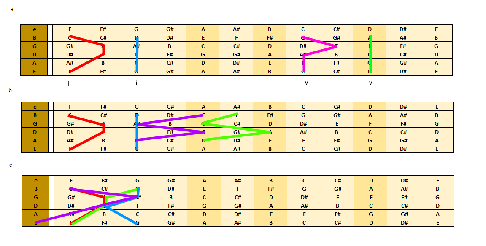
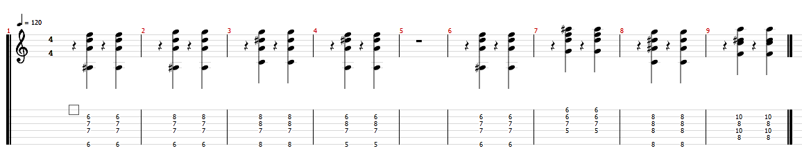

GROWL
I'd rather be playing guitar
 EN
EN
So, you have done the hard work and learned all those great chords. You go to learn a piece from it's leadsheet or whatever and see a I iv ii V progression indicated. In rhythm changes for example, this can all occur within 4 bars and at high tempo. If you try to throw your standard moveable shapes at this progression, you will end up with your hands flying all over the fretboard. There is a simpler way!
Guitars are both powerful and confusing in their ability to present multiple options for playing the same tone. This allows us to change the VOICING of a chord ie: the exact register, order and (with guitar) string position of each tone in that chord. In general, there are three options for the I iv ii V progression:
- a) Play all the chords with the same string root
- b) Play all the chords with the root where it first appears in one scale position on the guitar
- c) Arrange the chords to create minimal movement
Approximation of these three approaches are shown below. Whilst each will produce a different effect -and in music that can be important- the third option is clearly easiest for the player. It contains minimal hand position changes. When you are dealing with a lot of chords played fast, this can be a great help.

In the tab below I have shown the difference between options b and c. You can tell that both are valid approaches and have their pluses and minuses. For example, option b has some tasty 5th drops in bass notes, a hallmark of musical coherence. The importance however, is realising that arrangement can make things easier.
How did I come up with this arrangement? My usual approach is to mark out a fretboard on paper or in Excel. That way you can see all the tones without taxing the brain too much or your fingers getting in the way. Then try to proceed from one chord to the next, changing as few notes as possible. A couple of things help here:
- a) Try to think in thirds, that's how chords are built, locate one tone from the proceeding plus a third
- b) Try to imagine a 7th string lower than the E. Imagine the bass note for a chord shape is there and suddenly you have a useable inversion minus that note